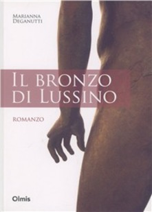
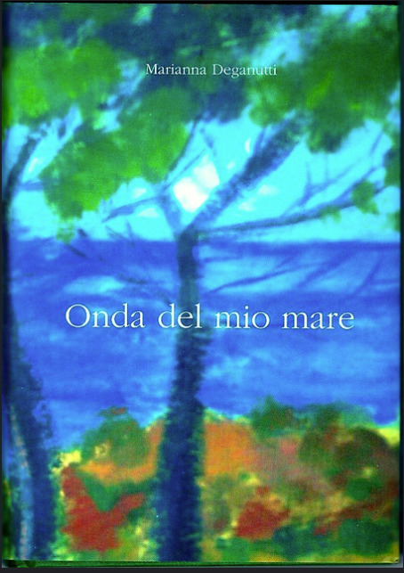

Marianna Deganutti
Moj jezik v tvojih besedah / La mia lingua nelle tue parole
Presentation:
Reviews:
Prizes:
Presentation:
Reviews:
- Dobre knjige (SLO)
- Dom (SLO)
- Družina (SLO)
- Messagero Veneto (IT)
- Jalastovka (SLO)
- Primorski dnevnik (SLO)
- Kulturne, knjižne in literarne novosti (SLO)
- Novi glas (SLO)
Prizes:
- 1st place at the "San Vito poetry prize" 2024/2025
- 4th place at the "A vento e sole" (edited poetry) prize
- Signalled at the International poetry and narrative award "Europa in versi e in prosa" 2024
- Finalist at the Mario Luzi literary prize

Il bronzo di Lussino

Onda del mio mare